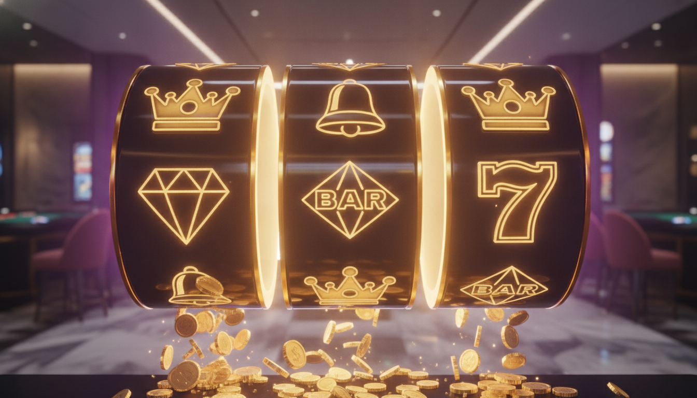
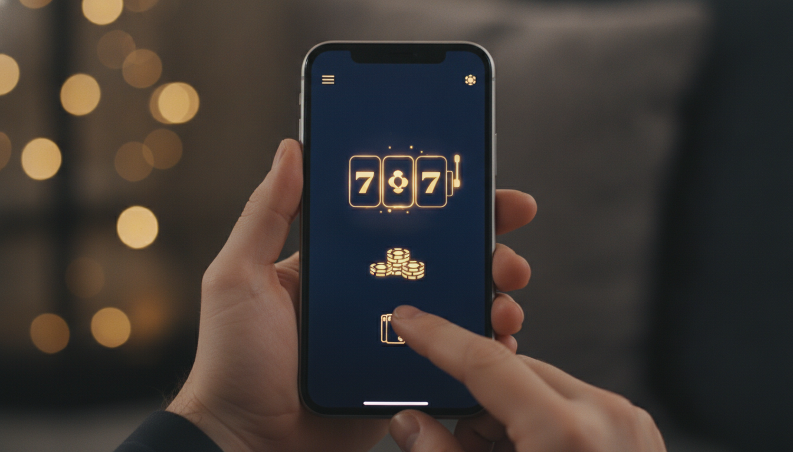

HOT
HOT


Jugabet Casino Argentina 2026: Reseña Completa, Bono 375% y Análisis Experto
Jugabet Casino Argentina: visión general 2026
Jugabet Casino Argentina se ha convertido en una de las plataformas de iGaming más comentadas entre los jugadores locales que buscan tragamonedas, casino en vivo y apuestas deportivas en un mismo lugar. En esta reseña independiente analizamos a fondo la oferta de bienvenida, el catálogo de juegos, los métodos de pago, la velocidad de los retiros, la seguridad y la experiencia móvil para que puedas decidir con información clara y verificada.
Durante esta evaluación pusimos a prueba el registro, depositamos saldo real, probamos distintas categorías de juegos y solicitamos retiros para medir tiempos reales. El objetivo es ofrecerte una imagen honesta y útil, lejos del simple listado de características que abunda en otras páginas.
Operado por Jugabet N.V. y dirigido al mercado argentino, el sitio destaca por una interfaz limpia en español, soporte para pesos argentinos y un proceso de registro rápido. A lo largo del artículo encontrarás nuestra valoración equilibrada, con virtudes y también con los puntos donde el operador todavía puede mejorar de cara a 2026.
Recordá que el juego es solo para mayores de 18 años. Apostá con responsabilidad, fijá límites de tiempo y dinero, y considerá el juego como entretenimiento y nunca como una fuente de ingresos.
Bono de bienvenida 375% y promociones
El gran reclamo del operador es su bono de bienvenida del 375%: al registrarte hoy y activar el paquete máximo para nuevos jugadores, recibís un impulso considerable sobre tu primer depósito. La promoción combina cuatro pilares que vale la pena conocer antes de depositar:
- Bono de primer depósito: el porcentaje del 375% multiplica tu saldo inicial para jugar más tragamonedas y mesas.
- Giros gratis: tiradas adicionales en slots seleccionados, ideales para descubrir títulos populares sin arriesgar saldo propio.
- Cashback semanal: una devolución periódica que amortigua las rachas negativas y aporta valor recurrente.
- Programa VIP: recompensas escalonadas, límites ampliados y atención prioritaria para los jugadores más activos.
Comparado con la media del mercado argentino, un porcentaje del 375% se sitúa claramente por encima de las ofertas estándar del 100% o 200%, lo que lo hace especialmente interesante para quienes quieren maximizar su primer depósito. La suma de giros gratis y cashback semanal convierte la bienvenida en un paquete recurrente y no en un incentivo de un solo uso, un detalle que valoramos positivamente.
Como en cualquier casino online, lo importante no es solo el tamaño del bono sino sus condiciones de liberación. Antes de reclamarlo, revisá el rollover (requisito de apuesta), el depósito mínimo, la caducidad y los juegos que contribuyen al cumplimiento. Leer los términos completos en la web oficial te evitará sorpresas a la hora de retirar.
Catálogo de juegos y proveedores
El catálogo es uno de los puntos fuertes de Jugabet. La plataforma reúne miles de títulos de estudios líderes del sector, con un fuerte protagonismo de Pragmatic Play, además de proveedores reconocidos como Play'n GO, Evolution y otros desarrolladores especializados en tragamonedas y casino en vivo. Esto se traduce en variedad de temáticas, mecánicas modernas como Megaways y compra de bonus, y un flujo constante de novedades.

Probamos la carga de varios títulos y comprobamos que los juegos arrancan con rapidez tanto en escritorio como en móvil, sin descargas pesadas ni interrupciones. La presencia de un buscador y de un apartado de novedades ayuda a no perderse entre la enorme cantidad de opciones disponibles.
Las categorías están bien organizadas: tragamonedas clásicas y de video, juegos de mesa (ruleta, blackjack, baccarat), crash games y un completo lobby en vivo. Los filtros por proveedor y por popularidad facilitan encontrar tu juego favorito en pocos segundos, algo que valoramos especialmente en sesiones rápidas desde el móvil.
Tragamonedas destacadas y sus RTP
Si te gustan los slots, encontrarás varios superventas del sector con porcentajes de retorno competitivos. Estas son cuatro tragamonedas que recomendamos probar y sus RTP de referencia:
- Gates of Olympus (Pragmatic Play) — RTP 96.5%, alta volatilidad y multiplicadores por racimos.
- Sweet Bonanza (Pragmatic Play) — RTP 96.48%, mecánica de pagos por acumulación y compra de giros.
- Big Bass Bonanza (Pragmatic Play) — RTP 96.71%, temática de pesca con giros gratis muy populares.
- Book of Dead (Play'n GO) — RTP 96.21%, un clásico de aventura egipcia con símbolo expansivo.
Si recién empezás, una buena estrategia es destinar parte de los giros gratis del bono a estos títulos de RTP elevado para familiarizarte con sus mecánicas antes de apostar con saldo propio. Así combinás aprendizaje y diversión minimizando el riesgo inicial.
Recordá que el RTP es un promedio estadístico a largo plazo y no garantiza resultados en sesiones individuales. La volatilidad determina la frecuencia y el tamaño de los premios: títulos como Gates of Olympus tienden a pagar menos a menudo pero con mayor potencial, mientras que otros ofrecen una experiencia más estable.
Casino en vivo y crash games
La sección de casino en vivo es otro de los grandes atractivos. Con crupieres reales transmitiendo en alta definición, podés jugar ruleta, blackjack, baccarat y formatos de game shows con interacción en tiempo real. La estabilidad del streaming y la variedad de mesas con distintos límites permiten adaptar la experiencia tanto a jugadores casuales como a quienes buscan apuestas más altas.
Las mesas suelen estar disponibles las 24 horas, con presentadores profesionales y cámaras múltiples que recrean la sensación de un casino físico desde tu pantalla. Para el jugador argentino que prefiere la emoción del tiempo real frente al azar puro de los slots, esta sección es un argumento de peso.
Los crash games y los juegos instantáneos, como los populares títulos de cohetes y multiplicadores crecientes, han ganado mucho terreno entre el público argentino. Su ritmo veloz, las rondas cortas y la posibilidad de retirar antes del 'crash' los convierten en una alternativa entretenida a las tragamonedas tradicionales.
Métodos de pago y velocidad de retiros
En materia de pagos, Jugabet ofrece opciones pensadas para el jugador local, incluyendo tarjetas Visa y Mastercard y criptomonedas, estas últimas cada vez más demandadas por su rapidez y privacidad. El tiempo de procesamiento de los retiros se sitúa, según el método, entre 5 minutos y 24 horas, un rango competitivo dentro del sector.
A continuación resumimos la ficha técnica del operador para que tengas los datos clave de un vistazo:
| Operador | Jugabet N.V. |
|---|---|
| Licencia | Curaçao eGaming |
| Bono de bienvenida | 375% para nuevos jugadores |
| Métodos de pago | Visa, Mastercard, Crypto |
| Tiempo de pago | 5 minutos – 24 horas |
| Proveedores destacados | Pragmatic Play, Play'n GO |
| Idioma / Mercado | Español · Argentina |
Nuestro consejo: completá la verificación de identidad (KYC) apenas abras la cuenta. Tener los documentos validados con antelación es la mejor forma de que tu primer retiro se procese en el extremo más rápido de esa horquilla, sin demoras administrativas.
Licencia, seguridad y juego responsable
Jugabet opera bajo licencia de Curaçao eGaming, una de las jurisdicciones de iGaming más extendidas a nivel internacional. Esta regulación exige estándares de operación, auditoría de juegos y mecanismos de resolución de disputas que aportan una capa de confianza para el jugador.
Conviene aclarar qué significa esto en la práctica: la licencia obliga al operador a separar fondos, ofrecer juegos con generadores de números aleatorios verificables y mantener canales de reclamación. No es la regulación más estricta del mundo, pero sí un marco reconocido bajo el que operan numerosas marcas internacionales.
En el plano técnico, el cifrado de los datos y las conexiones seguras protegen tu información personal y financiera. Igual de importante son las herramientas de juego responsable: límites de depósito, recordatorios de sesión y opciones de autoexclusión. Animamos a todo usuario a usarlas activamente. El juego es exclusivo para mayores de 18 años y debe entenderse siempre como una forma de ocio.
Versión móvil y aplicación
La experiencia móvil de Jugabet está muy cuidada. El sitio es totalmente responsive y se adapta a pantallas de cualquier tamaño, con menús táctiles, carga ágil de los juegos y acceso completo a depósitos, retiros y promociones desde el navegador del teléfono.

Para quienes prefieren una solución dedicada, la marca ofrece acceso optimizado tanto para Android como para iOS, con un rendimiento estable incluso en conexiones móviles. En nuestras pruebas, las tragamonedas y el casino en vivo se ejecutaron con fluidez, manteniendo la misma calidad visual que en la versión de escritorio.
Atención al cliente y programa VIP
El soporte al cliente está disponible en español a través de chat en vivo y correo electrónico, con tiempos de respuesta razonables para consultas habituales sobre bonos, verificación y pagos. Una sección de preguntas frecuentes bien estructurada resuelve además muchas dudas básicas sin necesidad de contactar a un agente.
Durante nuestras consultas de prueba, el equipo se mostró resolutivo y orientado a soluciones, aunque en horas de alta demanda los tiempos de espera del chat pueden alargarse ligeramente. Disponer de soporte en el idioma local sigue siendo una ventaja diferencial frente a operadores que solo atienden en inglés.
El programa VIP recompensa la fidelidad con niveles progresivos que pueden incluir cashback mejorado, límites ampliados, retiros prioritarios y un gestor personal de cuenta en los escalones más altos. Es un sistema atractivo para jugadores recurrentes, aunque conviene revisar la mecánica de puntos y los beneficios concretos de cada nivel antes de fijarse expectativas.
Ventajas y desventajas
Tras nuestro análisis, estos son los puntos a favor y en contra que debés sopesar:
- A favor: generoso bono de bienvenida del 375% con paquete completo de giros y cashback.
- A favor: amplio catálogo con Pragmatic Play, Play'n GO y casino en vivo de calidad.
- A favor: retiros potencialmente muy rápidos (desde 5 minutos) y soporte para criptomonedas.
- A favor: plataforma móvil pulida y atención en español.
- En contra: el bono exige cumplir requisitos de apuesta que conviene leer con detalle.
- En contra: la licencia de Curaçao ofrece menos garantías que las europeas más estrictas.
Veredicto final
En conjunto, Jugabet Casino Argentina 2026 se presenta como una opción sólida y completa para el jugador local: combina un bono de bienvenida potente, una biblioteca de juegos amplia y moderna, pagos ágiles con criptomonedas incluidas y una experiencia móvil bien resuelta. El programa VIP y el cashback semanal añaden valor a largo plazo para los usuarios recurrentes.
Como en cualquier casino, la recomendación final es informarte bien: leé los términos del bono, completá la verificación cuanto antes y jugá siempre dentro de tus posibilidades. Si buscás una plataforma variada y orientada al mercado argentino, Jugabet merece estar en tu lista corta para 2026. Jugá con responsabilidad: el entretenimiento es solo para mayores de 18 años.